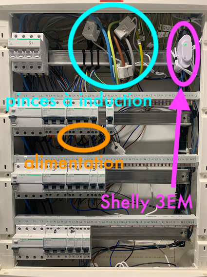
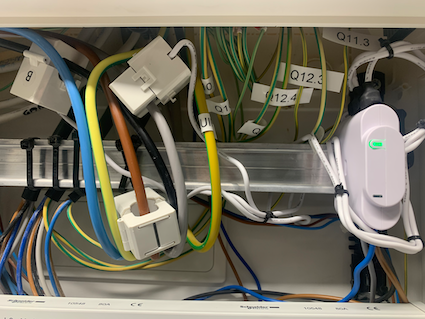
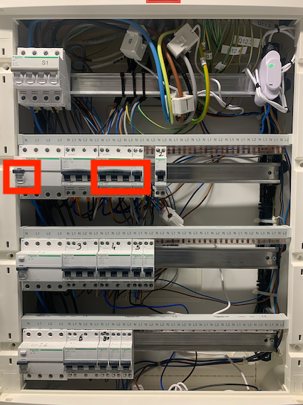
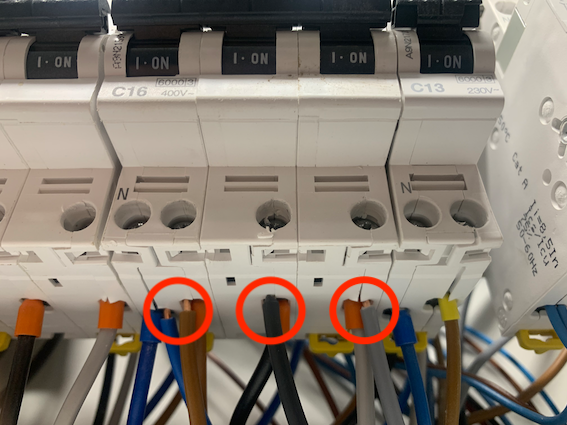
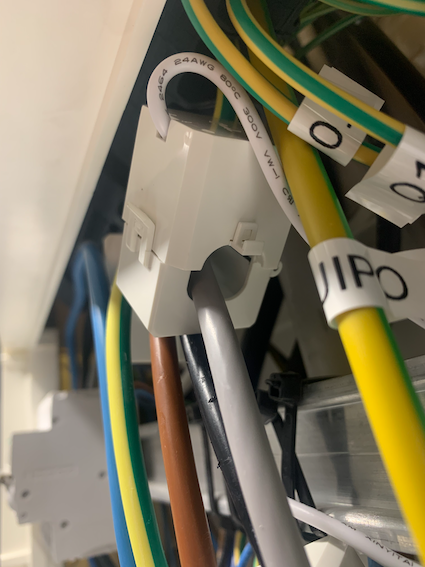
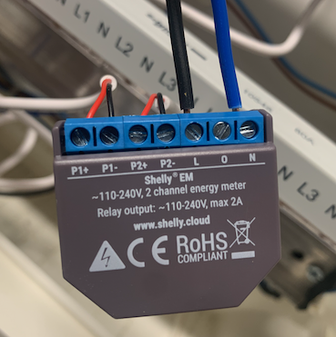
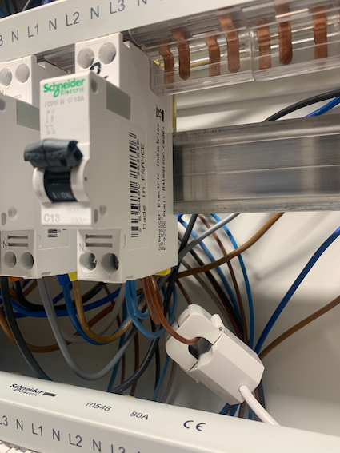

Compteurs électriques Wifi
Pour suivre en continu la consommation et production de courant, nous installons un compteur général trois phases et un compteur monophase, respectivement.
Bien que ce guide explique le montage attendu sur le panneau électrique central, il est recommandé de faire appel au spécialiste pour l’installation. Le guide décline bien sûr toute responsabilité en cas d’erreur ou d’accident à la suite ou lors de l’installation.
Compteur triphasé

Vue d’ensemble de l’installation
Ce compteur se branche directement sur les trois phases, au point d’entrée du réseau. La mesure se fait grâce à des pinces à induction, qu’il suffit de positionner autour du cable (dans la direction indiquée pour que les valeurs soient du bon signe). L’alimentation du boîtier lui-même se réalise aussi sur chaque phase ainsi qu’au neutre. Pour avoir une mesure correcte, il faut simplement faire attention à respecter le bon ordre et brancher la pince sur le cable de couleur correspondant à celui de l’alimentation.

Shelly 3EM installé: on aperçoit la pince à induction en place autour de chaque phase (noir, brun, gris)
Voici les étapes:
- Choisir un disjoncteur pour saisir l’alimentation, il n’est pas vraiment important lequel, mais il faudra couper l’alimentation.
- Couper l’alimentation de toute la rangée ou se situe le disjoncteur. Bien vérifier que le courant est éteint avec un multimètre, en prenant le voltage AC sur chaque phase où il est prévu de brancher le cable.

Couper le courant sur la rangée ainsi que sur le disjoncteur lui-même (note: sur la photo, le courant est branché)
-
Dévisser le connecteur sous le disjoncteur de telle manière à pouvoir rajouter le cable d’alimentation à l’intérieur. Brancher l’autre extrémité sur le Shelly. Faire de même pour chaque phase (brun, noir, gris), ainsi que pour le neutre (bleu).

Branchement des cables d’alimentation du Shelly 3EM. On distingue de gauche à droite la prise sur le neutre (bleu) et sur chaque phase (brun, noir, gris). (note: sur la photo, le courant est branché, il faut évidemment le débrancher pour l’installation)
-
Installer le Shelly sur le rail, brancher les pinces et les installer sur le cable correspondant, en prenant garde à respecter la direction du courant. Le manuel d’utilisation recommende de brancher la pince avant sur le Shelly. Il n’est pas nécessaire de couper le courant général pour positionner les pinces, mais prêter attention ou l’on met les doigts! 
Pince à induction en place
-
Une fois le Shelly branché, il crée son propre Wifi pour permettre de le configurer avec l’app Shelly. Se tenir près avec le smartphone et suivre la procédure dans l’app afin le rajouter au Wifi principal. Il faut parfois plusieurs tentatives, ne pas se décourager. Une fois le Wifi principal rejoint, la connection est stable.
-
Se connecter sur Home Assistant Configuration -> Server Controls. Il devrait avoir détecté automatiquement la présence du Shelly 3EM sur le réseau. Rajouter l’intégration et vérifier que les valeurs sont correctes.
Compteur monophasé

Compteur shelly 2EM, qui permet le raccord de deux pinces. L’idée est de mesurer en continu la quantité de courant produite par les panneaux solaires. La deuxième pince est optionnelle, dans mon cas elle est raccordée à la prise du garage pour pouvoir suivre la consommation relative à la charge.
Ce compteur se branche sur le cable d’injection de courant solaire (onduleur mono-phasé). L’installation se fait de la même manière que pour le compteur tri-phasé. Il faut bien faire attention à prendre l’alimentation sur la même phase que celle qui réceptionne le courant solaire.

La pince à induction mesure en continu le courant produit par l’onduleur
Même si d’un point de vue tarifaire cela ne fait aucune différence, il est plus rationnel de brancher le chargeur 220V Tesla sur la même phase que celle de l’onduleur, afin de véritablement pouvoir utiliser directement le courant produit (sans aller-retour au réseau). Dans mon cas, la prise garage n’était pas sur la même phase que l’onduleur, j’ai donc dû la changer.